Vous maîtrisez maintenant mieux la combustion des déchets dangereux à l’intérieur d’un four d’incinération. Mais que se passe-t-il après la combustion, quels sont les composants qui sortent du four ? Réponse : des mâchefers, des gaz chauds contenant des poussières et d’autres polluants.
Le module précédent expliquait comment extraire et éliminer ces mâchefers. Dans les deux modules 9 et 10, nous aborderons les points suivants :
L’incinération est souvent considérée comme responsable pour une grande partie de l’émission de certains polluants dans l’air. Les usines sont généralement situées dans des zones fortement urbanisées, c’est pourquoi il est indispensable de traiter efficacement les gaz de combustion, avant rejet à l’atmosphère.
Comme l’expliquait le module n° 5, la combustion des déchets dangereux est une oxydation exothermique qui produit un volume de gaz chaud très important. Ces gaz contiennent certains polluants avant traitement, notamment :
En plus, au cours de la combustion, se trouvent entraînées par le flux des gaz des particules de métaux dit « lourds » mélangées aux poussières. Ces molécules de métaux lourds se présentent sous forme gazeuse ou solide. Elles proviennent des composants des déchets, qui ont été incinérés. Les 12 métaux dont les émissions sont réglementées par l’arrêté incinération sont :
Ces gaz doivent être purifiés avant d'être rejetés dans l'atmosphère afin d'éliminer tout effet nocif sur la santé humaine, animale et végétale.
La réglementation applicable à chaque UIDD est spécifiée dans l’arrêté préfectoral (AP) d’exploitation du site concerné. Cet AP doit être au moins aussi contraignant que l’Arrêté Ministériel Incinération du 20 septembre 2002, qui transpose la Directive Européenne Incinération 2000/76. Pour respecter cette réglementation, divers systèmes de traitement des gaz de combustion ont été développés.
Les différents polluants sont traités de la façon suivante :
Plusieurs de ces termes vous sont encore inconnus et c’est normal. Dans le présent module, nous allons d’abord vous présenter les équipements destinés à traiter les poussières et certains métaux lourds, ensuite ceux destinés à traiter l’acide chlorhydrique (HCl) et d’autres polluants comme les oxydes de soufre S0x et l’acide fluorhydrique (HF).
Les gaz de combustion bruts provenant de l’incinération des déchets se composent en pourcentage volumique de :
[width=0.7]{Images/M8/M8_1.png}
Le composé généralement mesuré pour contrôler la qualité de combustion des déchets dangereux est le pourcentage volumique de l’oxygène. Cette mesure est effectuée par un analyseur d’oxygène placé avant le dispositif d’épuration ou à la cheminée.
La composition complète des fumées est présentée dans les analyses des gaz de combustion effectuées par les prestataires de service (Apave, Bureau Veritas, Inéris…) qui viennent contrôler la qualité des fumées à l’émission au moins une fois par an.
Par comparaison, l’air que l’on respire contient 21% Le gaz carbonique et la vapeur d’eau proviennent principalement de la décomposition de la matière organique, tels que le papier-carton ou le plastique lors de leur incinération dans le four.
Débit volumiqueLe débit des gaz peut être contrôlé en plaçant un débitmètre au niveau de la cheminée. Ce débit varie tout au long de l’installation en fonction de la température (sortie four, sortie chaudière…). Par commodité, on considère ce débit volumétrique normal des gaz à une température de référence de 0 °C (c’est-à-dire sans tenir compte de la vapeur d’eau). Il est mesuré en Nm3/h (normal mètre cube par heure), soit sur gaz humide soit sur gaz sec. Pour une tonne par heure de déchets incinérés, le débit des gaz de combustion est compris entre 5 500 et 6 000 Nm3/h sur gaz sec.
En prenant comme base de calcul un débit des gaz de 6 000 Nm3/h, les différents débits volumiques seron calculés de la façon suivante, en fonction du pourcentage de vapeur d’eau contenu dans les gaz :
Débit volumique des gaz de combustion à 0 °C Le débit de gaz est égal à la somme des débits de gaz de combustion. Pour une tonne par heure de déchets incinérés, le débit volumique des gaz se compose de :
| Gas | Flow rate in Nm³/h (wet gas) |
|---|---|
| Carbon dioxide (CO₂) | 420 to 720 |
| Water vapour (H₂O) | 820 to 1,143 |
| Oxygen (O₂) | 460 to 760 |
| Nitrogen (N₂) | 4,800 |
Fig. 1
Débit volumique réel des gaz de combustion en m3/h à chaque point de l’installation Les gaz qui sortent du four et de la chaudière sont entre 170 et 250 °C et arrivent à la cheminée à 150 °C environ (entre 60 et 200 °C). Le débit volumique réel des gaz diminue avec la température. Il est exprimé en m3/h (mètre cube par heure). Pour une tonne par heure de déchets incinérés, le débit réel des gaz est égal à :
En passant par chaque point de l’installation (four, dispositifs d’épuration, cheminée), le débit volumique des gaz de combustion diminue avec la température, tandis que le débit massique des gaz reste inchangé (hors ajout d’eau lié au procédé de traitement des gaz de combustion). Il est exprimé en kilogramme par heure (kg/h).
Débit massique des fumées :Débit massique des gaz de combustion : Pour une tonne de déchets incinérés par heure, le débit massique des gaz est de l’ordre de 8 745 kg/h. Le débit massique des gaz est la somme des débits massiques de chaque gaz de combustion (N2, CO2, O2, H2O) :
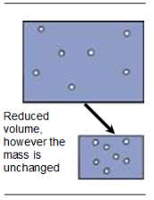
Fig. 2
| Gas | Flow rate in kg/h |
|---|---|
| Carbon dioxide (CO₂) | 825 to 1,415 |
| Water vapour (H₂O) | 620 to 870 |
| Oxygen (O₂) | 685 to 1,115 |
| Nitrogen (N₂) | 6,000 |
Fig. 3
Les gaz issus de la combustion contiennent moins de 0,2% Les teneurs moyennes en polluants que l’on peut observer avant traitement sont indiquées à la page 8 du module n° 3 :
| Pollutant | Content prior to processing (mg/Nm³) |
|---|---|
| Dust | 2,000 to 10,000 |
| Hydrochloric acid (HCl) | 1,000 to 10,000 |
| Carbon monoxide (CO) | 10 to 2,000 |
| Sulphur dioxide (SO₂) | 100 to 5,000 |
| Nitrogen oxide (NOₓ : NO or NO₂) | 200 to 500 |
| Hydrofluoric acid (HF) | 0.5 to 2 |
| Gaseous and particulate heavy metals: mercury (Hg), cadmium (Cd), lead (Pb), nickel (Ni), chromium (Cr), zinc (Zn), etc. | 5 to 10 |
| Volatile Organic Compounds (VOC) | 10 to 20 |
Fig. 4
Les principaux polluants éliminés avant le rejet des gaz dans l’atmosphère sont les poussières par les dépoussiéreurs et les gaz acides par neutralisation. Dans ce module nous présentons également le traitement des oxydes d’azote, des métaux et des dioxines.
Bilan massique pour l'acide chlorhydriqueL’incinération de 1 tonne d’déchets dangereux peut dégager à la sortie du four de 5 à 8 kg d’acide chlorhydrique. Une très faible quantité seulement, de l’ordre de 0,02 à 0,3 kg, sortira par la cheminée selon le type de traitement utilisé, soit une efficacité de 95%
Sortie chaudière, les gaz de combustion sont à des températures de 300 à 400°C. Un refroidissement par adjonction d’eau est utile pour aborder les étapes de neutralisation des fumées en voie sèche (aux alentours des 200°C).
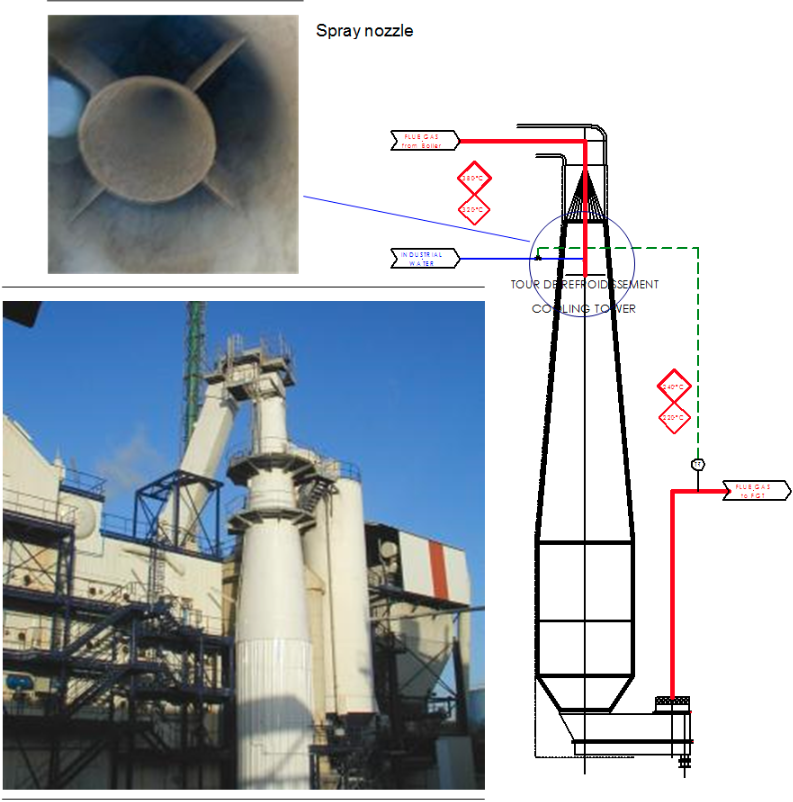
Fig. 5
Il peut être effectué de deux façons :
Tour de refroidissement bi-fluide (type PROCEDAIR) L’eau (filtrée impérativement) est pulvérisée dans une tour de refroidissement à co-courant grâce à des buses de pulvérisation à l’air comprimé. Les plus : système statique Les moins : consommation d’air comprimé / eau filtrée uniquement / risque de bouchage
Atomiseur (type NIRO ou NKK)
L’eau (eau industrielle ou eau de purge ou lait de chaux) est pulvérisée dans le réacteur par une tête tournante (turbine) à grande vitesse. Cette pulvérisation est réalisée à co-courant (NKK) ou à contre-courant (NIRO).
Les plus : tout type d’eau (même suspension lait de chaux) / pas de bouchage Les moins : investissement / encombrement / mécanique turbine
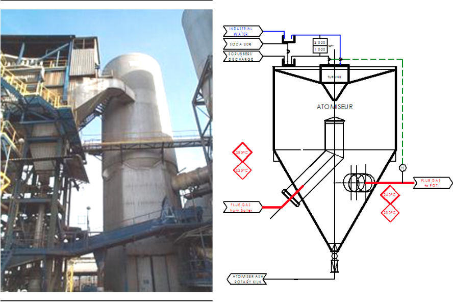
Fig. 6
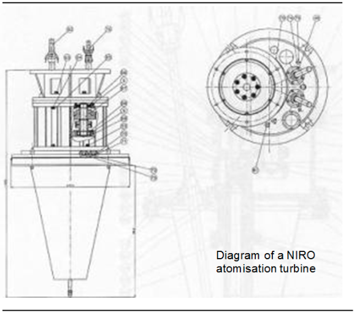
Fig. 7
Les poussières forment la partie la plus visible des rejets gazeux. Ces poussières contiennent en partie des particules de métaux lourds. En incinération, trois méthodes principales sont employées pour filtrer les gaz et retenir les poussières :
C’est un mode de dépoussiérage par « séparation électrostatique », qui consiste à faire passer les gaz chargés en poussières entre des électrodes métalliques soumises à une différence de potentiel.
Sur la photo ci-contre, vous pouvez le reconnaître par sa forme extérieure, un gros caisson.
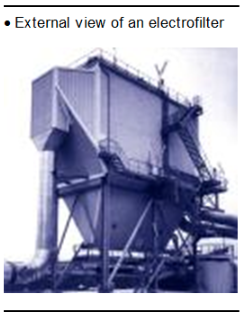
Fig. 8
DescriptionL’électrofiltre est un caisson dans lequel se trouvent des plaques (électrodes réceptrices) espacées dans le sens de l’écoulement des gaz, reliées à la masse, et entre lesquelles se trouvent des fils tendus ou barres (électrodes émissives), reliés à une source électrique de courant continu haute tension (50 000 à 90 000 volts) (figure ci-dessous).
Le rendement de l’électrofiltre sera d’autant plus important que la vitesse des gaz sera faible, et le nombre d’électrodes élevé, ce qui justifie sa forme d’un gros caisson.
Par exemple, la vitesse des gaz sortie four est de l’ordre de 4 m/s à 6 m/s ; en revanche, dans l’électrofiltre cette vitesse est ramenée de 0,5 à 1 m/s.
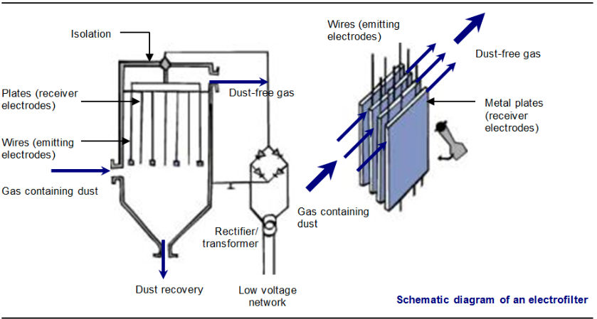
Fig. 9
Il peut contenir un ou plusieurs champs. Sur la photo ci-contre, l’électrofiltre possède deux champs : deux rangées de plaques/fils placées l’une après l’autre à l’intérieur du caisson. Chaque rangée comporte son propre groupe redresseur.
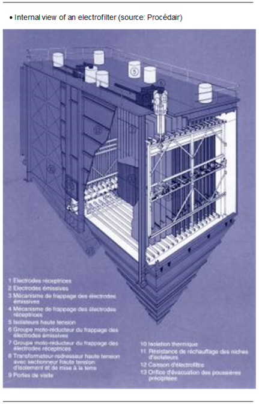
Fig. 10
FonctionnementLe champ magnétique créé par le redresseur/transformateur peut être utilisé par : {itemize} aux fils 1, par émission d’électrons 2, ce qui a pour effet de repousser vers les plaques 3 les particules; aux plaques, de les attirer 2 et de les collecter : une couche de poussières se forme sur la face intérieure de la plaque 4. Les poussières déposées sur les plaques sont décollées grâce aux marteaux (5 qui frappent sur la plaque et par vibration, cassent la couche de poussières qui tombe dans la trémie 6. itemize
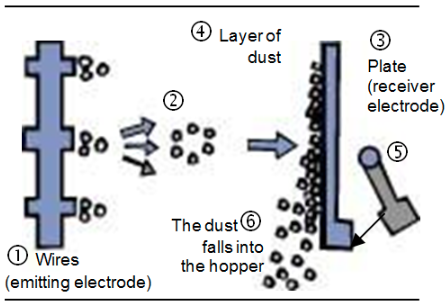
Fig. 11
Fonctionnement et maintenanceL'état de fonctionnement de l'électrofiltre peut être contrôlé :
La mise hors tension de l’électrofiltre est effectuée par une personne habilitée à le faire (sécurité : accès aux clés selon les recommandations du constructeur).
Avantages et inconvénientsLes plus : conception simple, bonnes performances, investissement modéré, rares défauts de fonctionnement, faibles pertes de charges (voir définition module n° 5), fonctionnement à des températures élevées (300-350 °C). Les moins : risques électriques, consommation électrique, performances limitées pour capter les poussières très fines (20-30 mg/Nm3).
C’est un mode de dépoussiérage par « filtration mécanique », qui consiste à faire passer les gaz chargés en poussières au travers de manches (sorte de « chaussettes »).
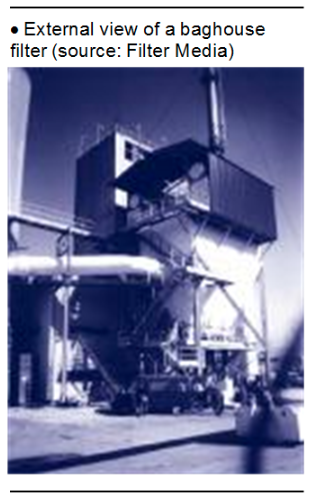
Fig. 12
DescriptionLe filtre à manches est un caisson fermé à sa base par une trémie, dans lequel sont positionnées des manches placées horizontalement ou verticalement, ouvertes à une extrémité et réparties en un certain nombre de cellules. L’allure extérieure d’un filtre à manches est représentée sur la photo ci-contre (positionnement des manches vertical).
FonctionnementLes gaz chargés de poussières pénètrent dans la partie basse du filtre, traversent le tissu filtrant des manches en y abandonnant les poussières sur la face extérieure des manches. Les gaz épurés remontent à l’intérieur des manches et sont évacués à la partie supérieure du filtre.
Les poussières se déposent par couches sur les manches et forment un filtre supplémentaire, augmentant encore la filtration et la neutralisation des gaz polluants, particulièrement des gaz acides.
Les poussières sont récupérées en pulsant à contre-courant de l’air éventuellement comprimé dans chaque manche. Par cette action, les poussières amassées autour des manches se détachent, et sont récupérées dans la trémie.
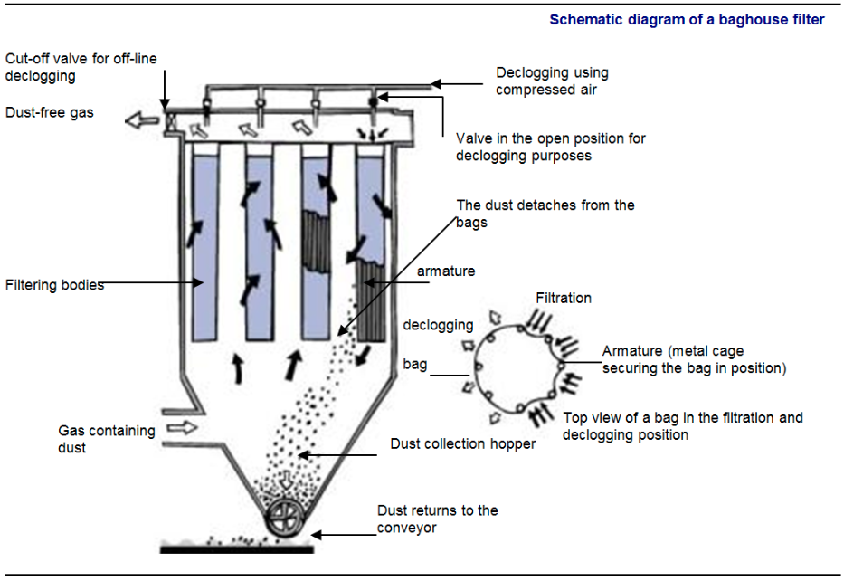
Fig. 13
Exploitation et entretienOn peut contrôler l’état de marche d’un filtre à manches : – au niveau de la salle des commandes, par l’indication donnée par l’opacimètre, mais également par la perte de charge mesurée en millimètre de colonne d’eau (mmCE). La perte de charge est contrôlée entre l’entrée et la sortie. Le décolmatage est souvent réalisé automatiquement. Certains systèmes utilisent des jets d’air comprimé (2 à 7 bars) pulsés à contre-courant des gaz. L’onde de choc ainsi produite décolle les poussières fixées sur la partie extérieure de la manche. Les poussières tombent dans le fond de la trémie et sont évacuées par un convoyeur à vis.
Le contrôle et le changement des manches se font par le toit du filtre (photos en bas de page) ou par l’une de ses faces latérales. Les deux photos ci-dessous illustrent la mise en place d’une manche filtrante et du panier de maintien (armature).
[width=] {Images/M8/M8_16.png}
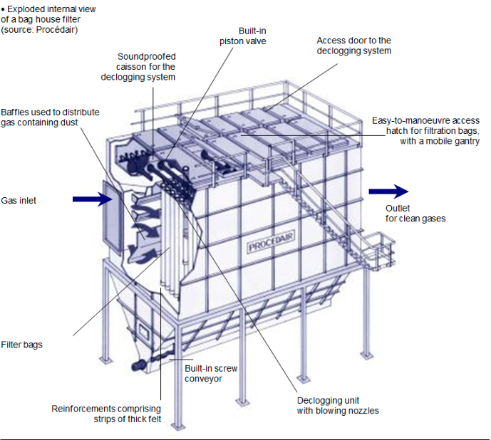
Fig. 14
Avantages et inconvénientsLes plus : équipement très performant (niveau d’émission de qq mg/Nm3). Les moins : les manches sont fragiles et chères. Les tissus des manches (Téflon, fibre de verre et autres matériaux) ne supportent pas les températures élevées (260 à 280 °C) maximum.
À cause de cette contrainte, une conduite by-pass est installée pour contourner le filtre à manches si la température ne peut être maintenue sous la valeur maximum acceptable.
D’autre part, en période d’arrêt, il est nécessaire de maintenir le caisson à 80 °C pour éviter une trop forte absorption d’eau (humidité) par la couche de chaux présente à la surface des manches filtrantes. Sinon, l’humidité contenue dans l’air ambiant (dans le filtre) provoquerait le colmatage des manches. Les pertes de charge sont plus importantes que celles présentes dans un électrofiltre.
C’est un mode de dépoussiérage par « centrifugation mécanique », qui consiste à faire tourner les gaz chargés en poussières dans une forme cylindrique, positionnée verticalement.
DescriptionLes multi-cyclones sont constitués d’un cylindre, prolongé à sa partie inférieure d’un cône.
Avantages et inconvénientsLes plus : équipement très simple, fonctionne à des températures supérieures à 350 °C, fonctionnement économique et sûr.
Les moins : équipement peu performant, technologie dépassée pour satisfaire la réglementation actuelle.
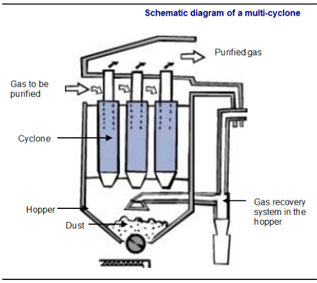
Fig. 15
Les dépoussiéreurs sont dimensionnés selon l’efficacité demandée. Les poussières sont des particules solides minérales de diamètre moyen égal à 30 microns.
Elles se composent principalement des oxydes de silice, de calcium, de magnésium et d’aluminium. Il y a aussi des imbrûlés sous forme de suies (cristaux de carbone).
Le rendement de l’électrofiltre dépend de :
On a recours à des vibrations (frappages) pour décoller les dépôts de poussières sur les plaques. Sous l’effet du choc et de leur poids, les poussières sont détachées et tombent dans les trémies.
Caractéristiques des électrofiltres Teneur des poussières en sortie : 20-150 mg/m3. Rendement : 95-99,99 %
Par un filtre à manchesUne couche de poussières se dépose sur le tissu filtrant. Elle crée une perte de charge qui est proportionnelle à la vitesse de filtration. Dans un filtre à manches la vitesse de filtration est de l’ordre de 50 à 70 m/heure (autour de 1m/minute). Cette vitesse est nettement moins importante, car elle correspond à la vitesse de passage des gaz sur le développé de la surface filtrante. Les médias filtrants se distinguent par la nature des fibres qui les composent et par leur mode de confection.
Matériau et domaine de température| Material | Limiting temperature (°C) |
|---|---|
| Ryton | 180 |
| P84 | 240 |
| PTFE (Teflon) | 260 |
| Fibre glass | 260 |
Fig. 16
Mode de confectionLes tissus filtrants sont soit tissés ou constitués de feutres aiguilletés sur un support formant une grille. L’extérieur de la manche peut également être recouvert d’une membrane de protection.
Techniques de nettoyageCe système de nettoyage consiste à appliquer brutalement un jet d’air comprimé qui provoque une onde de choc dans les manches concernées. L’opération a pour effet de décoller la pellicule de poussières de son support et de la faire tomber dans la trémie. Caractéristiques de décolmatage :
Les dépoussiéreurs sont dimensionnés pour assurer l’efficacité prescrite au préalable en donnant la teneur résiduelle en poussières voulue (teneur à la sortie du dispositif). La surveillance de l’efficacité est réalisée en plaçant un analyseur de poussières à la sortie du dispositif. C’est un moyen d’apercevoir tout dysfonctionnement éventuel (fuites, pièces défectueuses…).
La présence de polluants autres que les poussières doit être prise en considération lors du traitement des Le traitement des gaz de combustion nécessite de prendre en compte, la présence d’autres polluants que les poussières, souvent plus nocifs pour l’environnement (voir module n° 3).
Les procédés de neutralisation sont très nombreux. Ils consistent à « neutraliser » les gaz pollués par l’injection d’un réactif (chaux, bicarbonate de soude, soude) sous forme liquide ou solide dans un réacteur ou une tour de lavage. Ce traitement permet, selon le type de système utilisé, une réduction de plus de 90%
Les divers procédés sont classés selon les principales catégories suivantes :
Les différents procédés sont classés selon les grandes catégories suivantes :
C’est un mode de traitement « chimique » qui consiste à mélanger les gaz à traiter avec un réactif solide (la chaux pulvérulente, par exemple) pour neutraliser les gaz acides contenus dans les fumées.
DescriptionDifférents types de systèmes existent. La plupart utilisent un réacteur cylindrique configuré pour optimiser le contact du gaz et du réactif par la création d’un écoulement turbulent.
Dans l’exemple ci-après, le réacteur contient, dans la partie basse, à l’intérieur et au centre, un tuyau constituant l’arrivée des gaz pollués et la chaux. L’extrémité de ce conduit interne est rétrécie comme un cône (« venturi »), afin d’augmenter la vitesse de sortie des gaz. La partie haute du réacteur est la chambre de mélange.
Le mélange gaz et chaux est évacué dans la partie médiane sur un côté du réacteur (figure ci-dessous).
FonctionnementLa chaux est injectée par une buse placée dès la sortie du venturi. La très forte turbulence réalisée par le venturi, qui augmente la vitesse du flux, favorise ainsi le mélange des gaz pollués avec la chaux. Le positionnement de la buse d’injection de la chaux à l’entrée du réacteur a une très grande importance sur le rendement de la neutralisation. Le mélange gaz-chaux est ensuite évacué vers un dépoussiéreur.
Avantages et inconvénientsLes plus : équipement performant de neutralisation des gaz avec la chaux, fonctionnement à des températures allant de 130 °C à plus de 250 °C, absence de rejets liquides, possibilité d’injecter d’autres réactifs (charbon actif) pour des traitements complémentaires.
Les moins : difficulté à maîtriser un bon mélange des gaz, consommation de chaux très importante due au faible rendement de la réaction chimique.
Remarque : il est possible d’utiliser du Bicarbonate de Sodium, en lieu et place de la chaux. La réactivité de ce produit est légèrement différente (meilleure captation du Soufre) et sa mise en œuvre également (broyage préalable et non nécessité d’un réacteur de mélange : le bicar peut être injecté dans la gaine avant le FAM).
% centrage
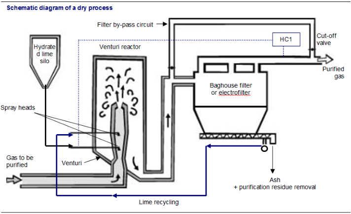
Fig. 17
C’est un mode de traitement « chimique » qui consiste à mélanger les gaz à traiter avec un réactif liquide (du lait de chaux, par exemple) pour neutraliser les polluants acides contenus dans les gaz.
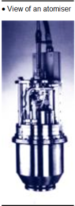
Fig. 18
DescriptionC’est une tour de réaction de forme cylindrique, avec en partie haute l’arrivée centrale des gaz pollués. Le lait de chaux est injecté en haut de la tour, sous l’arrivée des gaz, par un atomiseur rotatif, ou des pulvérisateurs bi-fluides dans lesquels le lait de chaux est pulvérisé en fines gouttelettes grâce à une injection d’air comprimé.
FonctionnementDans la tour de réaction, la partie des gaz acides réagit avec le lait de chaux atomisé en fines gouttelettes par un atomiseur rotatif qui tourne à très grande vitesse (5 000 à 13 000 tours par minute selon le modèle). Le disque de l’atomiseur est équipé de plusieurs orifices (une vingtaine) répartis sur la circonférence où passe le lait de chaux à grande vitesse sous forme de très fines gouttes.
Un mouvement hélicoïdal descendant favorise une turbulence des gaz et augmente les contacts de ces derniers avec le réactif atomisé. En bas du réacteur, l’eau contenue dans les gouttes de lait de chaux est totalement évaporée au contact du gaz chaud. Les résidus d’épuration sortent donc sous forme solide en partie basse. L’intérêt du procédé semi-humide est de refroidir les gaz et de favoriser la condensation de certains métaux, notamment le mercure.
Le mélange gaz-chaux est ensuite évacué vers un dépoussiéreur.
Exploitation et entretienLors d’une ronde, vous vérifiez la vitesse de la turbine de l’atomiseur en contrôlant l’intensité. Au niveau de la salle des commandes, vous vérifiez la température à l’entrée et la sortie du procédé semi-humide (l’écart de température est généralement de 50 °C).
En cas de mauvaise pulvérisation du lait de chaux, l’atomiseur peut être retiré rapidement de son logement situé à l’intérieur de la tour afin d’effectuer un remplacement de l’atomiseur complet ou du disque. Cette pièce est percée d’orifices où passe le lait de chaux sous forme de gouttes à très grande vitesse (100 mètres par seconde). Ensuite, le disque, encrassé de dépôt de chaux, est nettoyé en le trempant dans une solution acide
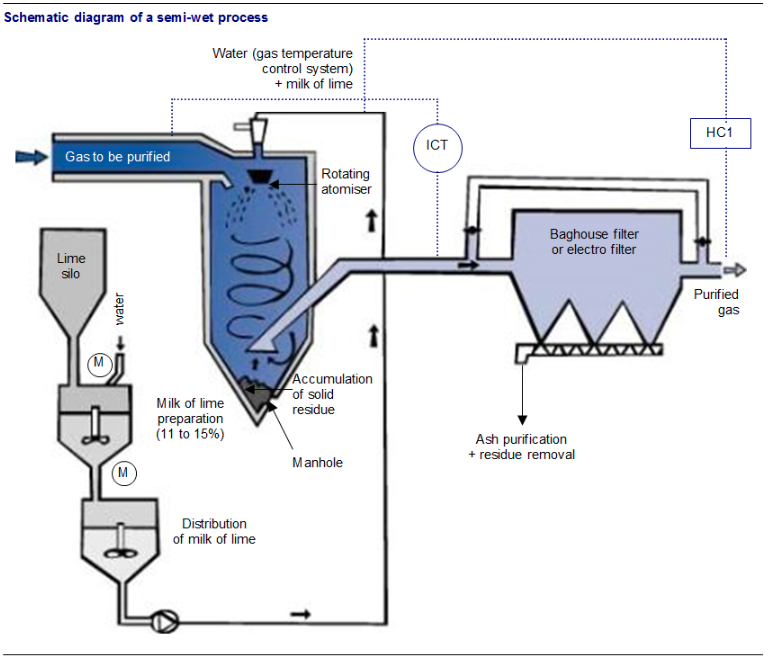
Fig. 19
Avantages et inconvénientsAvantages et inconvénients
Les plus : fonctionne à des températures de plus de 200 °C, absence de rejet liquide, refroidissement des gaz. Les moins : fiabilité de la pièce maîtresse, l’atomiseur rotatif. Nécessité de bien régler la température de sortie, à une valeur supérieure de 150 °C. Nota : Les pulvérisateurs bi-fluides sont moins fragiles, mais ils consomment de l’air comprimé.
Le principe de captation repose sur l’absorption des polluants présents dans les gaz par de l’eau avec ou sans réactifs liquides dans des laveurs. Ce principe met en œuvre d’importantes quantités d’eau, ce qui exclut l’évaporation totale des liquides pulvérisés. Il génère donc un rejet liquide qu’il faudra traiter. Cette « purge » issue des laveurs est :
En premier lieu un laveur acide traite le chlore le fluor et le mercure. On distingue deux types de lavage acide : injection d’eau seule ou injection d’eau et de réactif basique (lait de chaux ou solution de soude). Ensuite on trouve parfois un laveur basique pour traiter le soufre. Enfin, certaines installations peuvent être équipées d’un étage de lavage ou d’un laveur dédié au traitement du Brome et de l’Iode.
DescriptionLes laveurs sont des tours cylindriques à étages vides et ne comportant que des pulvérisateurs, ou bien comportant à certains niveaux des pulvérisateurs à jets et des plateaux horizontaux ou des garnissages. Chaque plateau favorise le contact à contre-courant entre les gaz et l’eau de lavage contenant les réactifs.
FonctionnementDans un premier temps les gaz sont refroidis par la pulvérisation d’eau jusqu’à une température de 60-70 °C. Le transfert des polluants de la phase gazeuse à la phase liquide se poursuit dans le reste du laveur. Un premier étage acide capte essentiellement l’acide chlorhydrique ainsi que le mercure et d’autres métaux lourds présents dans les gaz. L’étape suivante consiste à piéger le soufre présent sous forme de SO2. Enfin, une injection de solution de Bisulfite de sodium (Na2SO3) permet de capter le Brome et l’Iode. Cette dernière étape dans le procédé humide peut être facultative.
Généralement, un dépoussiéreur est nécessaire avant passage dans un procédé humide, afin d’éviter par la suite tout encrassement. Il est fréquent, vu les températures d’entrée (autour de 200 °C), d’utiliser un électrofiltre.
Le dispositif représenté sur la figure de la page de gauche est composé d’une colonne à plateaux. Les gaz passent dans la tour de lavage cylindrique où ils rencontrent successivement une pulvérisation d’eau servant au refroidissement, des plateaux, puis, au sommet de la tour, un dévésiculeur à aubes, arrosé au-dessus par des pulvérisateurs. La neutralisation des gaz acides s’effectue au niveau des premier et deuxième plateaux, par contact avec une solution alcaline. Le réactif (chaux ou soude) est dosé en continu dans la solution de lavage recyclée, par un contrôle du pH.
Avantages et inconvénientsLes plus : équipement très performant de neutralisation des gaz et de captation des métaux, rendement de captation élevé, permettant une consommation optimale des réactifs. Les moins : coût d’investissement plus élevé et rejet liquide à traiter.
Pour piéger les acides polluant gazeux, un lavage des gaz ou l’introduction d’un produit neutralisant sont nécessaires. Les principaux produits utilisés selon le dispositif mis en place sont :
La chaux hydratée est un réactif alcalin ou une base. C’est un produit issu de la transformation du calcaire (craie-gypse) extrait des carrières. La chaux hydratée contient de l’hydroxyde de calcium Ca(OH)2 qui est l’agent de neutralisation de l’acide chlorhydrique.
Lors de sa manipulation, il faut se munir de matériel de protection (lunettes, masque à poussières, gant). Si par accident vous entrez en contact, il faut se rincer abondamment à l’eau car la chaux hydratée possède un effet desséchant et irritant sur la peau et les muqueuses (yeux, gorge).
Caractéristiques physiquesLa chaux hydratée, parfois appelée éteinte, est employée sous forme de poudre ou sous forme de lait de chaux. La qualité d’une chaux hydratée dépend du diamètre des particules, du taux de pureté et, surtout, de la surface spécifique.
Lait de chauxLe lait de chaux est préparé le plus souvent à partir de chaux éteinte ; c’est une suspension de chaux dans l’eau. Sa teneur est en général comprise entre 80 et 150 grammes de chaux éteinte par litre de lait de chaux.
Bicarbonate de sodiumLe bicarbonate de sodium est un produit de fabrication et sa formule chimique est NaHCO3. Il est employé essentiellement au niveau des procédés secs. Il se présente sous la forme de poudre blanche. Avant son injection dans le dispositif, il est préalablement broyé. En effet, le produit fraîchement broyé permet de diminuer le diamètre des particules solides jusqu’à 10 microns. Cela a pour conséquence d’augmenter la surface de contact entre le bicarbonate de sodium et le gaz.
Eau de lavageL’eau est employée au niveau des procédés humides. Elle refroidit les gaz jusqu’à atteindre 65-70 °C. Les polluants gazeux présents dans les fumées d’incinération, tel l’acide chlorhydrique, sont absorbés dans le milieu liquide. Les polluants sont ainsi piégés tant que leur dissolution dans le liquide est possible. Le contact entre l’eau et le gaz est réalisé selon différents modes :
La solution de soude peut être utilisée au niveau des procédés humides. Le réactif est livré avec une concentration massique de 50%
Solution de bisulfite de sodiumCette solution de Na2SO3, à 5 où 20%
Le dibrome (Br2) et le diiode (I2) sont réduit en acides (HBr et HI) qui sont piégés dans la solution de lavage.
L’efficacité d’un procédé de neutralisation est réalisée grâce à une mesure en continu de la teneur en acide chlorhydrique (HCl) et dioxyde de souffre (SO2) par un analyseur de gaz placé au niveau de la cheminée.
Au niveau des procédés secs et semi-humidesAprès des essais de performances réalisés au cours de la mise en service de l’installation, le débit d’injection du réactif alcalin est déterminé de telle sorte que la teneur à la sortie en HCl/SO2 ne dépasse pas la teneur limite réglementaire.
Pour certains procédés, un ou plusieurs analyseurs de HCl/SO2 commandent la vis ou les vannes d’injection du réactif alcalin en fonction de la teneur limite de consigne.
En revanche, avec cette approche, tout dysfonctionnement de l’analyseur de HCl/SO2 peut entraîner une surconsommation en réactif. Un mauvais étalonnage de l’appareil de mesure peut également avoir des conséquences.
Au niveau des procédés humidesUn pH-mètre mesure le pH de l’eau de lavage qui pilote le dosage du réactif de neutralisation (lait de chaux). Un densimètre pilote, lui, la purge en continu du laveur.
Rendement et consommation en réactifLes réactifs sont généralement utilisés par excès pour obtenir la teneur de HCl/SO2 en sortie du traitement. Vous trouverez donc dans les Refidd (résidus d’épuration des fumées d’incinération de déchets dangereux) les poussières, les résidus d’épuration (chlorure de calcium, chlorure de sodium), mais aussi l’agent de neutralisation en excès (chaux hydratée et carbonate de soude).
Le traitement des fumées issues de l’incinération d’une tonne de déchets dangereux génère environ 60 à 90 kg de Refidd (avec des variations selon les procédés d’épuration des fumées).
Utilisation de réactifs (kg/tonne de déchets incinérésLes consommations de réactifs sont proportionnelles à la quantité de polluants contenus dans les déchets. Le facteur de proportionnalité est généralement supérieur à 1 et est appelé sur-stoechiométrie. Ce facteur est lié au système de traitement des fumées.
Les quantités de polluants contenus dans les déchets dangereux est éminemment variable. Le tableau ci-dessous a pris l’hypothèse de déchets contenant 1%
{figure}[H]
| Reagent / System | Excess stoichiometry | kg/kg HCl | kg/kg SO₂ | kg/T waste |
|---|---|---|---|---|
| Powdered lime | ||||
| Dry system | 2 | 2.0 | 2.3 | 46 |
| Semi-wet system | 1.5 | 1.5 | 1.7 | 35 |
| Wet system | 1.1 | 1.1 | 1.3 | 25 |
| Bicarbonate of soda | ||||
| Dry system | 1.2 | 2.8 | 3.1 | 60 |
Fig. 20
figure Comparaison entre la chaux et le bicarbonate de sodium| Criterion | Hydrated lime | Sodium bicarbonate |
|---|---|---|
| Benefit | Cheapest product | No jamming; less excess reagent |
| Drawbacks | Risk of jamming | Need for crushing; more expensive product¹ |
| Operating temperature | 150 °C | 180–190 °C |
| Efficiency | 95% | > 95% |
| Handling and safety | Use of protective equipment (goggles, gloves, dust mask) | Use of protective equipment (goggles, gloves, dust mask) |
| Effects on operators and required actions | Dry mucosa (eyes, throat) — required action: rinse with plenty of water, shower | Skin irritation — required action: washing |
Fig. 21
¹ The product is more expensive, but tonnage is saved when using CET with Refidd.
Le rendement est la quantité d’acide piégé par le dispositif d’épuration sur la quantité d’acide à l’entrée du dispositif. Le rendement varie de 95 à 99%
Eau de lavagePour éliminer les acides au niveau d’un procédé humide, il faut environ 4 à 7,5 m3 d’eau pour 1 000 m3 de fumées. Cette eau est recyclée dans le laveur. Seule une petite quantité (environ 0,3 m3 d’eau par tonne de déchets) est extraite et constitue la purge de concentration du système de lavage. La température des fumées, au contact de l’eau, chute jusqu’à atteindre environ 60-70 °C. La purge des eaux de lavage est :
Les métaux lourds peuvent être captés selon trois méthodes principales :
Après un lavage acide des gaz, on obtient une solution de déconcentration à traiter, qui contient les métaux lourds ainsi solubilisés (environ 40 milligrammes de métaux lourds par litre). L’addition d’un réactif TMT 15 ou Aquarex C8 S 305, puis d’un lait de chaux à cette solution permet de constituer un composé stable et de précipiter les métaux lourds.
Procédé d'adsorption du charbon actifCaractéristiques des charbons actifs : Les charbons actifs sont issus de différents minéraux : houille bitumineuse, lignite ou noix de coco. Ils portent généralement chacun un nom commercial (voir tableau ci-après, avec leur différente composition, et leur surface spécifique). Ils se présentent sous la forme d’une poudre noire très fine.
| Commercial name | Composition | Specific surface area (m²/g) |
|---|---|---|
| Darco PC100 | Bituminous coal | 965 |
| GL50 | Bituminous coal | 650 |
| FGD | Lignite | 547 |
| Sorbalit | 5% lignite + 95% hydrated lime | 20 |
Fig. 22
Quantité approximative à injecter :Pour capter les métaux lourds volatils, il faut environ 0,3 kilogramme de charbon actif par tonne de déchets incinérée
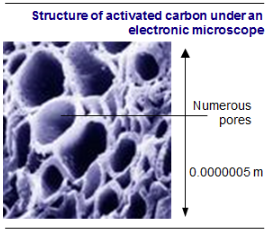
Fig. 23
Les pores des charbons actifs ont des diamètres pouvant aller, selon les besoins, de 5 Å à plusieurs centaines d’Å (un angström = 10-10 m = 0,000 000 000 1m). Ils sont en nombre tellement important qu’un gramme de charbon actif peut représenter une surface interne allant de 700 à 2 500 m2 selon le degré d’activation, soit la surface d’un demi-terrain de football.
Pour éliminer les métaux lourds, tels que le mercure et le cadmium, présents dans les gaz de combustion, on emploie du charbon actif ou du coke de lignite (charbon actif bas de gamme) par injection directe dans la veine de gaz. La mise en œuvre simple est schématisée ci-contre.
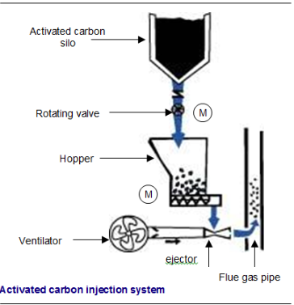
Fig. 24
Son injection dans les conduits de gaz à épurer peut se faire selon deux modes différents :
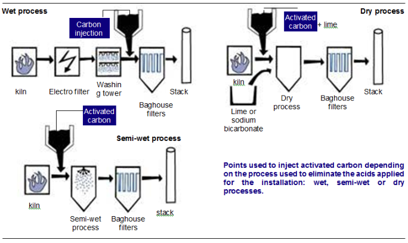
Fig. 25
Ce mélange contient de l’ordre de 5%
En mélange avec le bicarbonate de sodium, le produit final contient 2%
Élimination par injection de solution de sulfure de sodium (Na2S)Lorsqu’une ligne d’incinération est équipée d’une tour qui assure le refroidissement des gaz en sortie chaudière par injection de fines gouttelettes d’eau, il peut être adjoint un pulvérisateur supplémentaire pour injecter une solution de sulfure de sodium.
La consommation usuelle est de 0,60 kg de sulfure de sodium Na2S (100%
Le rôle du sulfure de sodium est de complexer les métaux lourds, comme le mercure, rencontrés sous forme gazeuse à ces températures de service. Ainsi transformé en solide, le sulfure de mercure sera aisément capté par le dispositif de filtration des poussières.
Présentation des métaux lourdsLa majorité des métaux lourds contenus dans les gaz de combustion à la sortie du four d’incinération sont sous forme volatile. Après refroidissement, certains métaux lourds se présentent sous forme de fines particules, à l’exception du mercure. Ces fines particules sont captées avec les poussières par le dispositif de dépoussiérage installé, soit un électrofiltre ou soit un filtre à manches.
Le tableau suivant présente, en pourcentage, la répartition des métaux lourds dans les résidus ultimes, et dans les gaz de combustion.
| Type of heavy metal | % in clinkers | % in dust | % in flue gases |
|---|---|---|---|
| Iron | 99 | 0.98 | 0.02 |
| Copper | 89 | 10.00 | 1.00 |
| Zinc | 51 | 45.00 | 4.00 |
| Lead | 58 | 37.00 | 5.00 |
| Cadmium | 12 | 76.00 | 12.00 |
| Mercury | 4 | 24.00 | 72.00 |
Fig. 26
À titre d’exemple d’application, le fer qui est contenu dans les déchets est principalement évacué avec les mâchefers. Il est récupéré et valorisé après déferraillage des mâchefers.
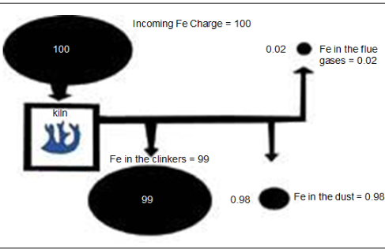
Fig. 27
En supposant qu’une tonne de déchets contienne 3 à 6 kg de métaux lourds, la répartition globale des métaux lourds présents dans les différents résidus d’incinération et les gaz de combustion est schématisée dans le croquis ci-après. Les métaux lourds sont principalement captés avec les poussières.
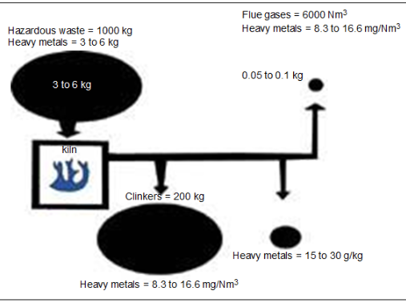
Fig. 28
Les dioxines (Poly-Chloro-Dibenzo Dioxines = PCDD) et furanes (Poly-Chloro Dibenzo Furanes = PCDF) sont des composés organiques appartenant à la famille des Hyrocarbures Aromatiques Polycycliques (HAP) : Les PCDD sont au nombre de 75 et les PCDF 135 (selon le nombre de Cl présents et leur disposition).
Parmi tous ces composés, 17 « congénères » ont été retenus comme particulièrement dangereux, comportant tous au minimum 4 Cl dans les positions 2,3,7,8 ; la plus toxique étant la tétrachlorodibenzodioxine (TCDD). Chaque congénère est affecté d’un facteur de toxicité I.TEF allant de 1 (pour la TCDD) à 0.001.
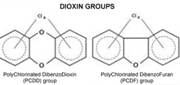
Fig. 29
Caractéristiques physico-chimiques : {0,3cm}Formation à partir de précurseurs : à partir de 200°C avec un max. autour de 350°C, plus précisément :
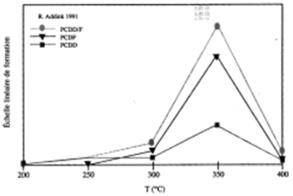
Fig. 30
Formation de novo : formation sur les cendres volantes, à partir de radicaux organiques (condensation des RH et Cl à la surface de la particule). Ce phénomène a lieu au cours du refroidissement des gaz entre 400 et 200°C avec un max à 350°C.
Effets sur l’environnement :Très grande stabilité chimique + caractère lipophile concentration dans les chaînes alimentaires.
Toxicité chez l’espèce animale :
| Area | Threshold dose (per kg of body weight) | Animal |
|---|---|---|
| Cutaneous toxicity | 1 ng/kg/day | Monkey |
| Carcinogenesis | 10 ng/kg/day | Rat |
| Immunity system | 6 ng/kg/day | Guinea pig |
| Chronic toxicity | 1 ng/kg/day | Rat (liver) |
| Reproduction | 0.7 ng/kg/day | Monkey |
Fig. 31
Effet sur l’homme : recommandation valeur limite d’exposition OMS 10pg/kg/jour
Les dioxines et furanes sont des composés comportant les éléments carbone (C), hydrogène (H), oxygène (O) et chlore (Cl), désignés scientifiquement sous le nom d’hydrocarbures aromatiques polycycliques chlorés. Il existe plusieurs sortes de dioxines et de furanes, dont certaines sont plus toxiques que d’autres. Elles sont donc quantifiées en TEQ (équivalent toxique).
Les rejets étant très faibles, il est préférable d’exprimer ces valeurs (voir module n° 3, p. 8) pour 100 000 t de déchets dangereux incinérées, soit :
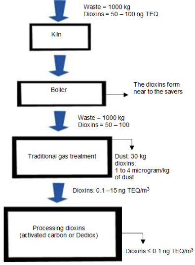
Fig. 32
Traitement par refroidissement rapideEn sortie de combustion, même si la combustion a été très bonne, il peut rester des chaîne carbonées et des noyau aromatiques. Ces chaînes, lors d’un refroidissement lent, peuvent se recombiner entre elles et former des dioxines et des furanes. Cette recombinaison est maximale entre 400 et 200°C. Pour éviter cette formation appelée de novo, la solution est de refroidir rapidement les gaz à la sortie de la combustion (1100 ou 850°C) jusqu’à une température basse (70°C).
Ceci se fait dans un « quench total », équipement dans lequel on pulvérise une grande quantité d’eau. Le système de traitement des fumées imposé derrière est un humide et on a également besoin d’un traitement des eaux et d’une autorisation de rejet.
Ce procédé est très efficace du point de vue des émissions de dioxines (on empêche leur formation) mais a l’inconvénient de ne pas récupérer d’énergie.
Réductions Non-Catalytiques (SNCR)Un réactif d’absorption (argile ou charbon actif) est injecté en voie sèche (avant le filtre à manches) ou en voie humide (dans le laveur). Les dioxines sont absorbées sur ce support qui est ensuite évacué avec les résidus d’épuration des fumées en CSDU. (cf traitement des métaux)
Réductions Catalytiques (SCR)Les réactions de destruction des PCDD-F en CO2 et H2O sont conduites sur un catalyseur fixé. Ce catalyseur peut être fixé sur les manches du filtre à manches, ou être installé en couches dans un réacteur. La température minimale de réaction est de 180°C.
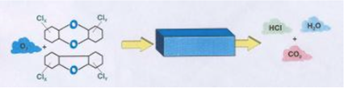
Fig. 33
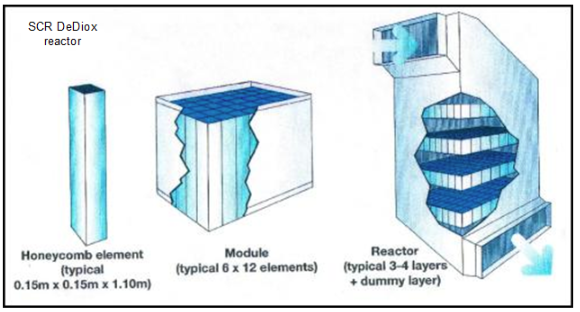
Fig. 34
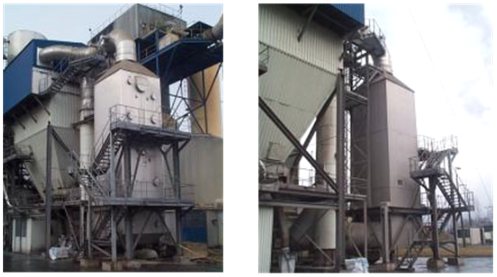
Fig. 35
Les oxydes d’azote (NOX) sont formés lors de la combustion à très haute température, soit 1 500 °C. Il y a réaction entre l’oxygène (O2) et l’azote (N2) pour produire les NOX. Ces oxydes d’azote présents dans les gaz de combustion contiennent principalement du monoxyde d’azote (NO), à hauteur de 95%
Au niveau européen la future valeur limite d’émission sera fixée à 200 mg/Nm3 de NOX pour les installations d’incinération. Cette valeur limite devra être respecté à l’entrée en vigueur du nouvel arrêté ministériel incinération (20 septembre 2002) au plus tard le 28 décembre 2005.
Il est à noter que l’automobile, la sidérurgie, le chauffage etc. sont également concernés par la production d’oxydes d’azote, en quantités bien supérieures à l’incinération.
Pour réduire la production de NOX, il faut limiter les températures du foyer de combustion (de préférence inférieure à 1 000 °C) et limiter l’excès d’air.
Pour limiter cet excès d’air, certains systèmes prévoient de recycler une partie des gaz de combustion et de les utiliser comme remplacement d’air primaire. Ces mesures peuvent s’avérer suffisantes pour abaisser la production des NOX sous le seuil des 350 mg/Nm3. Aussi, pour obtenir des performances supérieures, il faut utiliser des procédés chimiques spécifiques. Les deux principaux sont :
Dans les deux cas, les gaz réagiront avec les réactifs :
Ce procédé consiste à injecter de l’ammoniaque sous forme liquide dans la partie haute du four. La réaction chimique nécessaire pour éliminer efficacement les oxydes d’azote doit se situer dans une plage de température des gaz comprise entre 850 et 1 000 °C. L’efficacité de la réaction chimique dépend également de la durée de contact entre le réactif et les gaz.
Des pulvérisateurs sont installés dans la chambre de combustion, sur deux étages (figure ci-contre) ou sur le toit. Pour assurer un débit constant et une bonne pulvérisation de solution ammoniacale, un complément d’eau est apporté aux buses d’injection (voir figure ci-dessous).
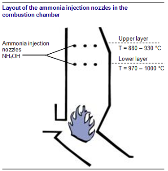
Fig. 36
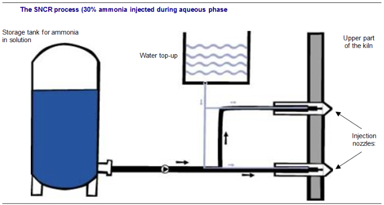
Fig. 37
Le procédé SNCR a généralement un taux d’abattement maximum de 50 à 60%
Selective Réduction Catalytique (SCR)Le principe consiste à injecter, à une température voisine de 300 °C, de l’ammoniaque sur un lit de catalyseur. Dans ce cas, le catalyseur est un produit chimique solide fixé en une mince couche sur un grillage de support en forme de nid d’abeilles et au travers duquel les gaz de combustion doivent passer. Ce traitement des NOX, du type SCR, est situé après les dispositifs d’élimination des poussières et des acides.
Description du lit catalytique :Par sa présence, le catalyseur permet de favoriser la réaction de dénitrification (transformation des oxydes d’azote en azote). Il n’est pas consommé comme les réactifs habituels employés pour l’élimination des polluants acides. Il est constitué :
La durée de vie des catalyseurs est de 15 000 à 30 000 heures suivant la qualité du traitement des fumées qui précède. Cette transformation nécessite que les gaz soient réchauffés à 250-400 °C afin d’activer le déclenchement de la réduction catalytique.
Le taux d’abattement du process SCR est fixé par la charge de catalyseur. Il peut facilement être supérieur à 95% Le réactif ammoniaque stocké sous forme de solution ammoniacale (NH4OH) est pulvérisé dans le conduit des gaz par un système d’injecteur, avant le lit catalytique, comme indiqué dans la figure ci-dessous.
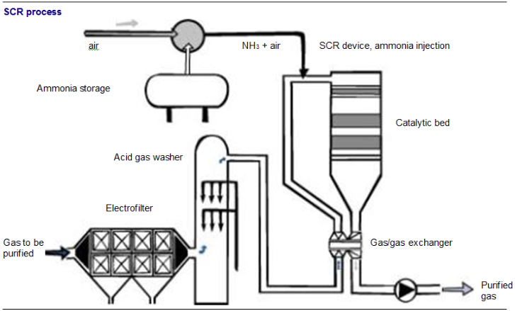
Fig. 38
Il est également possible d’installer le catalyseur DeNOx en sortie d’un filtre à manche à 200°C. Il n’y a alors pas besoin de dispositifs de réchauffage des gaz.
Mass BalanceLe réactif réagit avec les oxydes d’azote (NOX) pour libérer l’azote (N2), gaz principal de l’atmosphère.
Nota : Les conditions de température et d’injection doivent être extrêmement précises, de manière à éviter des réactions parasites (reformation de l’oxyde d’azote).
Si les bonnes conditions de température ne sont pas atteintes, des réactions chimiques indésirables peuvent également se produire entre l’ammoniaque et le dioxyde de soufre (SO2), conduisant à la formation de composés « collants » et nauséabonds (sulfate ou bisulfate d’ammonium). Or les conditions de température au niveau des injecteurs dans la chambre de combustion sont difficiles à maîtriser. C’est la raison des performances limitées du procédé SNCR.
Pour obtenir des taux importants de réduction des oxydes d’azote, il est parfois nécessaire d’injecter l’ammoniaque en grande quantité, ce qui conduit à utiliser un excès d’ammoniaque. Il est alors nécessaire de prévoir sa captation par l’eau (le mot anglais stripping est parfois utilisé) pour limiter sa teneur dans les gaz en aval.
Les bons rendements de réduction des NOx sont fonction de la quantité d’ammoniaque injectée et de la température des gaz. Outre le catalyseur qu’il convient de régénérer ou remplacer toutes les 15 000 à 30 000 heures, le procédé SCR ne génère en continu aucun résidu solide. La performance du dispositif permet de limiter à 2 à 3 kilogrammes de NOX produits par tonne de déchets incinérées.
La consommation théorique d’ammoniac NH3 est de 1 kg/t DD. Dans la pratique, un excès d’ammoniac est nécessaire, sa consommation réelle est égale à 1,2 à 1,7 kilogramme de NH3 par tonne de DD. Dans les deux cas une réaction chimique transforme l’ammoniac (NH3) et les oxydes d’azote (NOx) en azote (N2) et en eau (H2O).
Les équipements que nous avons présenté précédemment sont généralement mis en œuvre par combinaison, afin d’atteindre les impositions réglementaires sur les émissions atmosphériques. La plupart des systèmes de traitement des fumées modernes comporte ainsi deux ou trois étages de traitement (filtration-neutralisation, lavage, finition DeDiox).
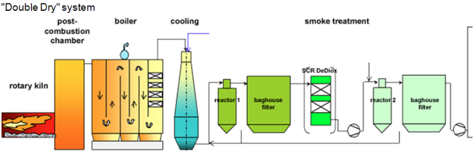
Fig. 39
La chaux neuve est injectée dans le second filtre (ou est également injecté le réactif d’adsorption des dioxines) puis recyclée dans le premier filtre. Un SCR DeDiox peut être installer entre les deux filtres.
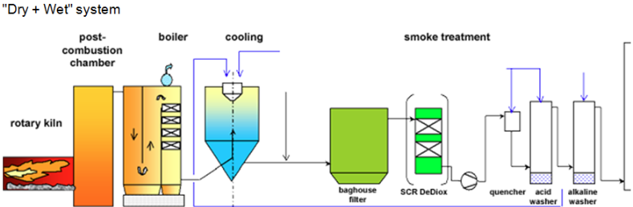
Fig. 40
Ce système allie la performance filtration du FAM à l’efficacité de captation d’un système de laveur. Les purges du laveur sont « séchées » dans l’atomiseur qui assure en même temps le refroidissement des fumées.
Système « Humide » Ce système, très efficace, impose d’avoir un traitement des eaux et une autorisation de rejet.
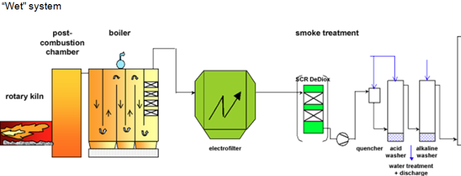
Fig. 41
Mettre la « batterie de chauffe » en service pour faire monter l’ensemble de l’installation en température (100 à 110 °C). Le but est d’éviter de faire entrer des gaz dans les filtres froids, ce qui provoquerait des condensations de vapeur d’eau et de gaz acides. De même, lors d’arrêt périodique, la batterie de chauffe sera maintenue en fonctionnement pour éviter le colmatage de la chaux déposée sur les parois de la manche, car la chaux absorbe facilement l’humidité de l’air ambiant.
Filtre à manchesFiltre à manches Surtout sur les manches neuves, il convient de les protéger au préalable par injection de réactif de neutralisation (exemple : chaux hydratée/procédés secs) avant introduction des gaz polluants à épurer.
Procédé humideLes pompes sont mises en service avant de faire pénétrer les gaz chauds dans le laveur dont les matériaux de construction ne supportent pas une température élevée. On évite ainsi que la température de fonctionnement du laveur soit dépassée par arrosage d’eau au niveau du quench pour abaisser la température jusqu’à la valeur recommandée (70 °C). Des sécurités sont prévues sur un laveur : une bâche d’eau de sécurité située au sommet de l’installation qui a pour fonction de « noyer » le laveur si la température dépasse le point de fonctionnement ; l’installation est alors mise à l’arrêt.
Sur les procédés de neutralisation, les pompes prévues pour le produit de neutralisation dans le procédé sont soumises à un usage intensif (abrasif) et les circuits ont tendance à se colmater étant donné que la chaux est très peu soluble dans l’eau. Généralement, il y a un circuit de secours en cas de dysfonctionnement. L’entretien est régulièrement fait et des pièces de rechange doivent être disponibles pour tout changement.
Entraînement de gouttelettesEn cas de problème d’atomisation, il est possible que toutes les gouttelettes vaporisées par l’atomiseur rotatif ou par les buses ne soient pas complètement évaporées par les gaz de combustion. La présence de gouttelettes jusqu’aux filtres à manches peut entraîner une détérioration des filtres en causant un colmatage partiel.
Accumulation à l’intérieur des tours d’atomisationIl est possible que d’importants dépôts s’accumulent à l’intérieur des tours d’atomisation et soient à l’origine de problèmes nécessitant l’arrêt de l’incinérateur. Il est normal qu’une certaine quantité de dépôt s’accumule dans la base et les tours sont généralement équipées pour permettre l’évacuation de ces résidus, à moins qu’ils s’agglomèrent en un amas de plus en plus gros pouvant causer l’arrêt du système.
CCorrosion des tours de refroidissement et des tours d’atomisationsolidité de l’ensemble est convenable et, le cas échéant, remplacer les tôles qui auront fait l’objet d’une forte corrosion.
Bourrages de silos (Refidd ou chaux)Si des dépôts répétés se forment en bas de trémie malgré le calorifugeage, cela signifie qu’il existe une zone plus froide. Un dispositif de chauffage par résistance est souvent nécessaire à cet endroit (traçage électrique).
Changement des manches dans le filtre à manchesLes manches tiennent généralement deux à cinq ans. Leur état est à vérifier périodiquement : soudures de l’armature métallique, étanchéité des manches, notamment au niveau des coutures. Il est parfois utile de faire parvenir des échantillons à un laboratoire qui pourra alors confirmer le niveau d’usure des fibres du tissu et l’espérance de vie pour leur utilisation résiduelle. Pour les changements, il faut suivre les prescriptions du constructeur (amener les nouvelles manches sur place sans les enlever de leur caisse, suivre les techniques d’enlèvement et de mise en place des manches). Les employés affectés à cette opération seront correctement protégés pour éviter d’être en contact avec les résidus de neutralisation encore présent sur les manches qui sont à remplacer.